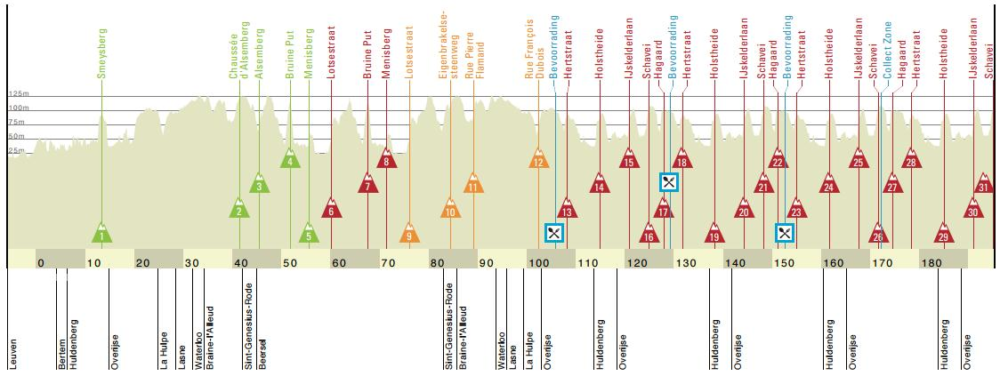

2019年4月17日，第59届布拉班特之箭结束。范德普尔（Corendon-Circus）在星光熠熠的小集团中脱颖而出，击败阿拉菲利普（德库尼克-快步）、韦伦斯（乐透-速的奥）和马修斯（太阳网）夺冠。

布拉班特之箭在巴黎-鲁贝和阿姆斯特尔黄金赛之间举行，为即将到来的阿登古典赛热身。比赛早期形成了七人突围集团：德邦特（Corendon-Circus）、里文斯（Roompot-Charles）、普兰卡特（Sport Vlaanderen-Baloise）、巴卡特（旺蒂-Gobert）、罗比特（Wallonie-Bruxelles）、邦乔鲁诺（Neri Sottoli-Selle Italia-KTM）和佩隆（诺和诺德）。